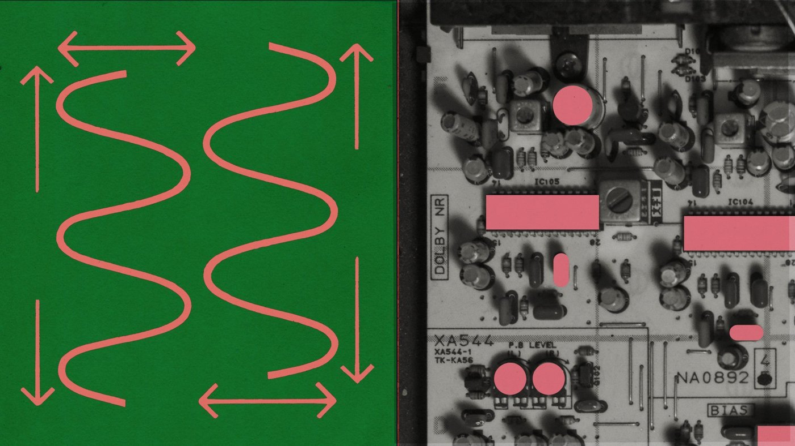
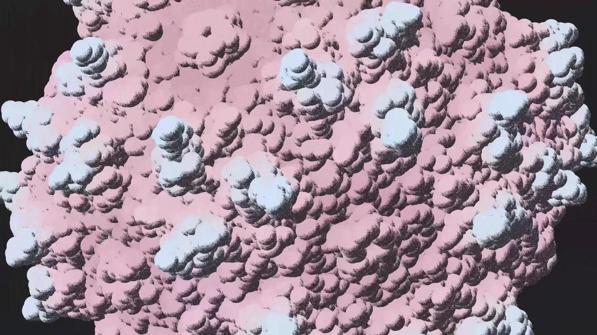

11 月 9 日，Anthropic 发布 Claude Fable 5.2 与 Claude Mythos 5.2，两者是同一个底层模型的两个门牌。公告里塞了太多东西：FrontierCode 2.0 拿到 49.1% 的历史最高分，价格降到每百万输入 8 美元，1000 个智能体在 28.7 小时里重证了费马大定理，三块按模型设计文件直接出厂的电路板通电即用、电路零修改。这不是一次常规迭代——它把「模型会写代码」和「模型能交付硬件」之间的距离，压到了一个季度以内。
一、背景：一年前它们连电路板都排不好
这条曲线有个很低的起点。据 Anthropic 官方研究页披露，一年多前他们开始测 Claude 设计基础电子电路，合作方是设计制造电路板的 Diode Computers。当时的任务是「读一颗芯片的数据手册，判断它需要哪些外围元件」，模型连电路板布局都做不可靠，也设计不出能互相装配的零件。
所以这次的三块板子不是天外飞来的演示。它是一条被连续训练推了一年多的曲线，和 9 月那次「几十个智能体 + 研究员指导 + Prove2Me 平台」完成的费马大定理形式化，属于同一条路线上的两个采样点。理解了这一点，才知道该兴奋在哪、不该兴奋在哪。
二、核心：价格往下、分数往上，同时发生
2.1 便宜了，而且快了
Fable 5.2 定价为每百万输入 8 美元、输出 40 美元，比 Fable 5.1 更低；可选的 fast mode 提到 16/80 美元，把 token 生成速度拉高最多 2.5 倍。官方口径是输出速度比 5.1 快最多 30%。
性能侧的关键数字：FrontierCode 2.0 在 Xhigh 档从 5.1 的 32.4% 直接跳到 49.1%，提升 16.7 个百分点；FrontierSWE v2 拿 69.9%；AutomationBench 从 31.4% 涨到 51.4%；OSWorld 2.1 计算机操作 89.3%；带工具的 Humanity's Last Exam 74.2%；RoboDojo 机器人仿真从 27.6% 跳到 64.9%，翻了一倍多。
更能说明问题的是性价比：在 High effort 下，Fable 5.2 与 Opus 5.5 的最高分基本持平（45.3% 对 45.5%），成本约为后者一半。也就是说，它不是在「更贵换更强」，而是在同一条成本曲线上整体东移。
2.2 三块板子：从提示词到打样

实验对象是三台设备：一个插 USB-C 的免提音箱（要求带麦克风、扬声器、蓝牙和 PCB 板载天线）、一个语音助手中枢、一只掌上电子宠物。Anthropic 给 Claude 的只有一个简单提示词，剩下的它自己走完：写设备规格、画原理图、决定元件在 PCB 上的位置、布铜线、在 CAD 里建外壳、写固件、做可制造性（DFM）检查，最后指导人类工程师按设计文件打样。
结果三块板子上电即用，0 次电路返修。这个「零」比任何跑分都硬——电路板错一根走线就得重新打样，周期以周计。它意味着模型对几何、约束和下游影响的推理，已经能落在物理世界上。
2.3 1000 个智能体，28.7 小时
同一批公告里最容易被忽略、但影响最长远的是这个玩具实验：1000 个跑 Fable 5.2 早期版本的智能体，在没有 Prove2Me 平台、没有研究员 steering 的情况下，用 28.7 小时复现了费马大定理的形式化证明。输出 token 只有 9 月那次的三分之一，证明长度只有七分之一。作为对照，9 月版本是 1 名研究员 + 几十个智能体、11 天、约 60 亿输出 token、1300 万行 Lean 代码。
人类给的骨架很薄：60 条待证陈述、一句话的经典路线草图、这些陈述用到的定义、以及 47 条此前已证引理，再加上 lead / helper 的角色划分。没有别的指导。安全侧则是另一套工程：每个智能体跑在无网络的沙箱里，每条 shell 命令和文件编辑执行前都过一遍分类器，另有离线监控逐条审阅团队动作。
这个玩具实验表明，运行 Fable 5.2 这类模型的智能体团队，可以在精心设计的安全边界内完成宏大、长周期的目标。
科学侧的另一个采样点来自 Mythos 5.2：它预测出完整的 AAV 衣壳结构（基因治疗用的病毒蛋白外壳，共 60 条链）。做法是自己写代码在相邻五链分组上跑开源折叠模型，再用衣壳对称性拼合全部 60 条链；在 AAV2 上，预测结果与实验结构的误差约为一个原子宽度。此外它还解决了黑洞物理里的两个开放问题。

三、各方反应：同一天，三份站队
评测机构 Artificial Analysis 当天给出结论：Fable 5.2 以 65 分登顶 Intelligence Index v5，领先 Gemini 4 Carbon 的 60 分和 Claude Opus 5.5 的 59 分。这个差距不算碾压，但足以让它坐在第一的位置上。
应用层反应更快。Cognition 宣布 Fable 5.2 已在 Devin Desktop 和 Devin CLI 上线，并强调它在 FrontierCode 2.0 以 49.1 分排第一，且「低推理力度下用约三分之一的价格超过前代得分」。Higgsfield 把它接进 MCP，直接开 3 天免费不限量。这两家不是在评测，是在抢客户——一个能自己改代码、自己布线的模型，对 agent 产品的边际价值远高于榜单上那几分。
竞争格局也没被甩开。FrontierCode 上 GPT-6 Astra 是 42.8%、Gemini 4 Carbon 41.1%；AutomationBench 上 Gemini 4 Carbon 的 53.9% 反而高于 Fable 5.2 的 51.4%。Anthropic 官方也在公告里明确劝退：日常编码和知识工作先用 Opus 5.5，遇到难度再向上切 Fable 或 Mythos，向下切 Sonnet 5.5 / Haiku 5.5。
安全侧的安排值得单独记一笔：Fable 与 Mythos 是同一个模型，差别只在门禁。Mythos 要拿到 Cyber 或生命科学验证计划（Life Sciences / Cyber Verification Program）的资格才能访问。同一个权重，两个门牌，这在主流厂商里还是第一次作为默认产品结构出现。
四、深度解读：智能体的瓶颈从来不是「能不能做」
第一层意义在成本结构。过去两年智能体落不了地，卡的不是单步能力，而是「每一步都要人复核」带来的人力成本。当模型同时做到更快、更便宜、更少返工，agent 的账才算得过来——三块零返修的电路板，本质上是一次人力复核成本趋零的演示。
第二层在治理范式。能力越强的模型越危险，这是行业共识；Anthropic 的解法不是阉割，而是分层准入：公开版带安全护栏，强能力版靠资质审核发放。这条路径如果被验证可行，会成为高危能力（生物、网络、自动化研发）的标准分发形态，而不是每家公司自己拍脑袋决定放不放。
第三层是别过度外推。1000 个智能体是官方自己反复强调的「玩具实验」：60 条陈述的骨架是人给的，路线草图是人给的，47 条引理是人给的，沙箱和分类器也是人装的。它证明的是「在给定问题分解下，规模化求解可行」，而不是「AI 能自己提出问题」。三块电路板同理——免提音箱和电子宠物属于低复杂度消费电子，离车规、医疗、射频前端还很远。真正的稀缺资源正在从「求解能力」移向「问题定义能力」。
五、总结
一句话：Fable 5.2 最重要的不是 49.1 分，而是它把「降价」和「变强」同时做到了——当能力提升不再需要加价，智能体才第一次成为一门算得过来的生意，而不再是发布会上的演示。